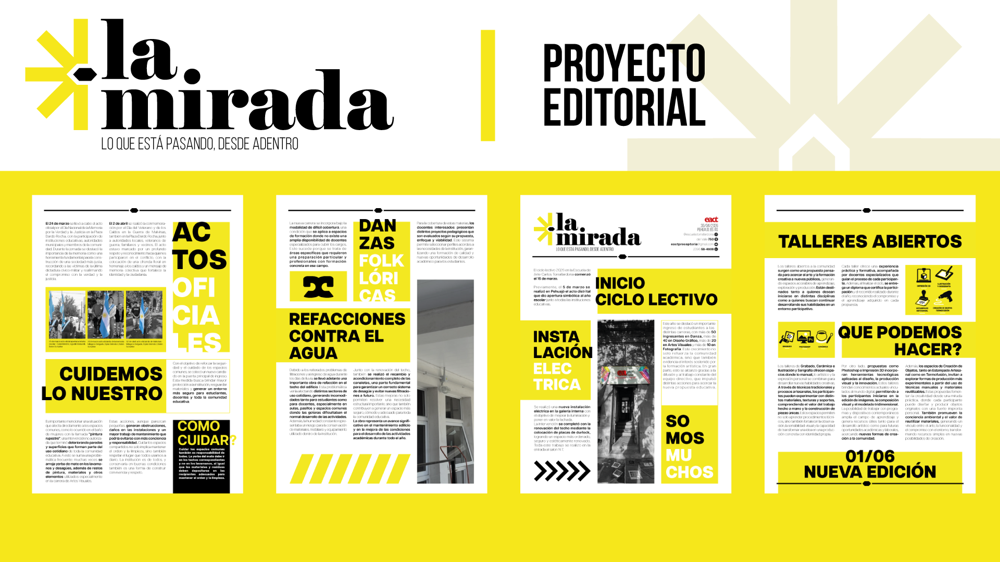

EL CONCEPTO
El proyecto parte de la idea de crear un newsletter escolar que recopile y comunique diferentes acontecimientos, novedades y actividades de la institución, construyendo una mirada interna sobre lo que sucede en la escuela. Se busca darle un carácter periodístico a la información, convirtiendo hechos cotidianos en contenido editorial y generando una publicación que refleje la identidad de la comunidad educativa.
LA SOLUCIÓN
La propuesta se resuelve a través de una composición editorial que explora la distribución de textos en columnas, trabajando con distintas jerarquías tipográficas, tamaños de titulares y bloques de información. Se utiliza una retícula flexible que permite organizar el contenido y combinar texto e imágenes de manera dinámica, generando diferentes ritmos de lectura. El contraste entre tipografías, los destacados y los recursos gráficos ayudan a ordenar la información y darle identidad visual a la publicación, poniendo en práctica los principios del diseño editorial.
